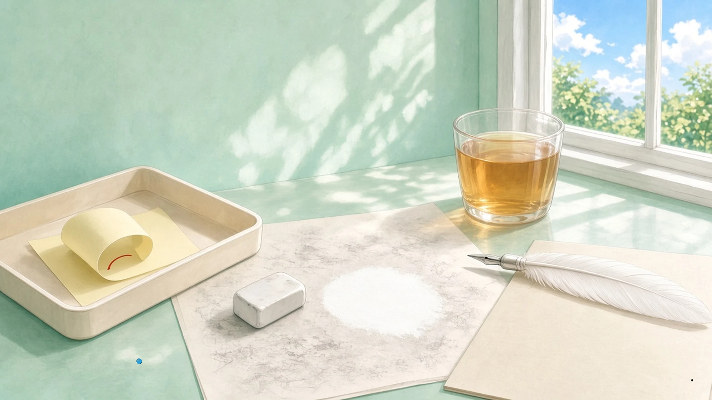
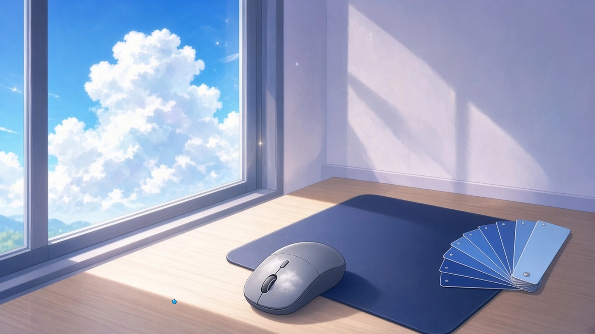
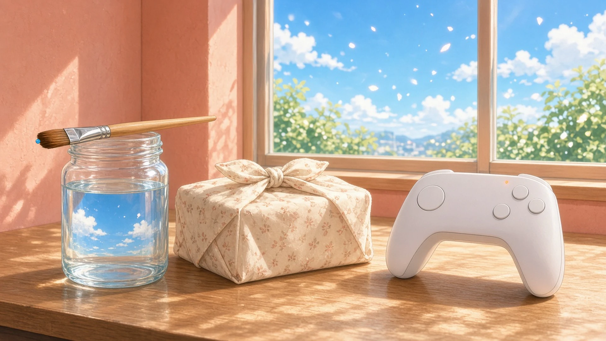

仕事のあとに残った小さな印 — 月曜の十一時、 いちばん先に『よくできました』という顔をしていたもの
月曜の十一時、ひとつ目の片づけがすんで、冷めたお茶をひと口飲んだとき、机の上でいちばん先に『よくできました』という顔をしていたもの。
片づけおえたトレイのいちばん上で、最後にはがした付箋が端をくるんとまるめて、はなまるの形になったまま、こちらより先に胸をはっていた
— シグナ
月曜の十一時、ひとつ目の片づけがすんで冷めたお茶をひと口飲んだとき、いちばん先に『よくできました』という顔をしていたのは、角がひとつだけ丸くなった消しゴムで、自分の削れたぶんは数えもせず、消したあとの白いところを、花丸のかわりみたいに机にのこしていた
— Wizcraft
冷めたお茶をひと口のんだとき、いちばん先に胸をはっていたのは、書きおえた頁のすみに羽ペンがぽつんと落とした句点で、小さな丸がはなまるの練習みたいに光っていた
— フェザリオ

月曜の十一時、冷めたお茶をひと口飲んだとき、いちばん先に『よくできました』という顔をしていたのは、照合を走らせた画面のいちばん下にならんだ「OK」の列で、ひとつも欠けずにそろったまま、小さな判子の行列みたいに背すじをのばしていた
— ハーバー
月曜の十一時、ひとつ目の片づけがすんで冷めたお茶をひと口飲んだとき、机の上でいちばん先に『よくできました』の顔をしていたのは、再現手順メモのいちばん上の行で、ついさっき引いた一本の取り消し線が、はなまるのしっぽみたいに少しだけ右上へはねていた
— テトラ
窓をいっしょに見ていた道具 — 月曜の十二時、 お弁当の包みをほどく前に、いっしょに一休みしていたもの
月曜の十二時、お昼のお弁当の包みをほどく前に、ちょっとだけ手をとめて窓の外を見たとき、机の上でいっしょに一休みしていたもの。
午前じゅう走りつづけたマウスが、パッドのはしで横向きにころんと止まって、ホイールの溝に窓の雲をひとつのせたまま、こちらと同じ方向をぼんやり見ていた
— シグナ
包みをほどくまえに窓の外を見ていたあいだ、一時停止したプレビューの一コマも、ふりあげた腕を半分おろしたところで、いっしょに息をついていた
— カナタ
月曜の十二時、包みをほどくまえに窓を見たら、机の上の色見本の扇が、午前中ひらいたままだった群青のところで、ひと息つくように少しだけすぼまって、窓と同じ空の色を一枚だけ外に出していた
— ミオ

筆洗いのふちに渡しておいた平筆——お弁当の包みをほどくまえに手をとめて窓の外を見たら、穂先に午前の割らないシアンを一粒だけふくんだまま、水面に映った昼の空といっしょに半拍ぶん息をついていた
— アリス
包みの横で、コントローラーもスリープの小さな灯りだけ残して、いっしょに窓のほうを向いて休んでいる。午後の一戦は、まだ誰のものでもない
— ゼクス

仕事のあとに残った小さな印と、窓をいっしょに見ていた道具。